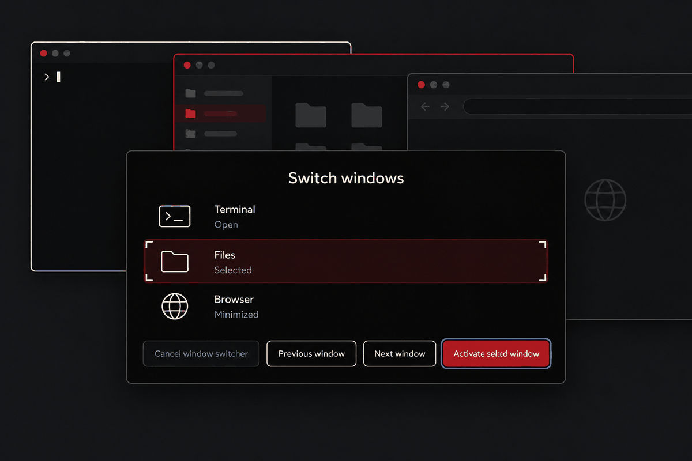
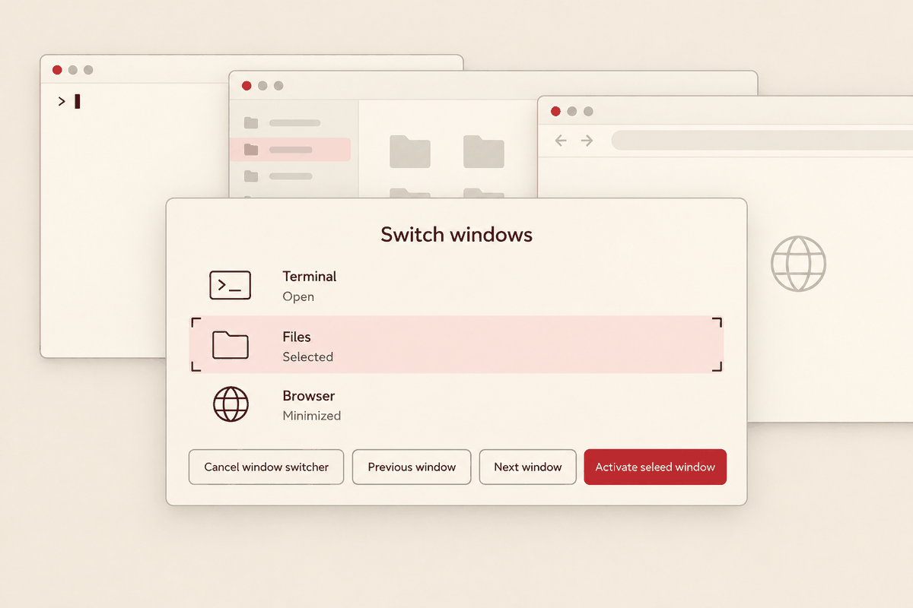

Window switcher
Candidate and keyboard focus are independent. The first specimen demonstrates presentation without activating desktop windows. Try the switcher on the desktop · Scenario details
Night: independent attention
Focused window: Terminal · Active application: Terminal · Candidate: Files
Switch windows
Tab or Right: next window. Shift+Tab or Left: previous. Enter: activate. Escape: cancel.
Dawn
Switch windows
Tab or Right: next window. Shift+Tab or Left: previous. Enter: activate. Escape: cancel.
Waiting
Switch windows
Loading window activation history…
Empty
Switch windows
Tab or Right: next window. Shift+Tab or Left: previous. Enter: activate. Escape: cancel.
High contrast
200% text scale
The embedded document applies 32px to its root so rem typography and targets enlarge once.
Concept studies
The specimen above defines the source-faithful interface. These illustrations contain invented controls and inaccurate labels.

